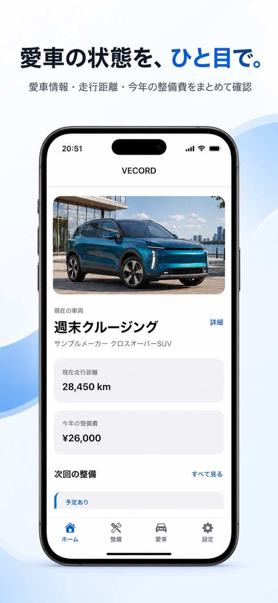
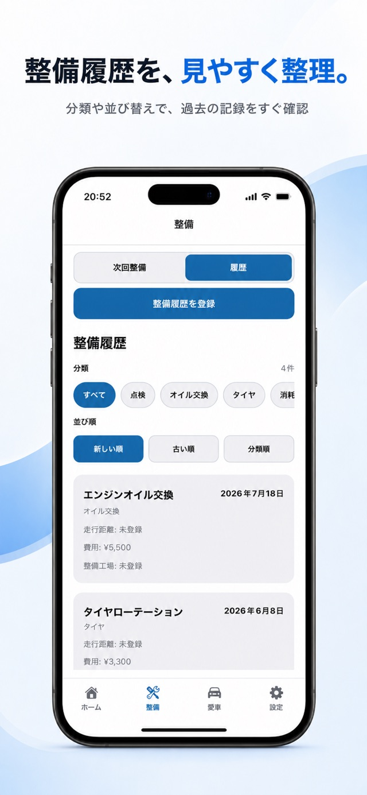
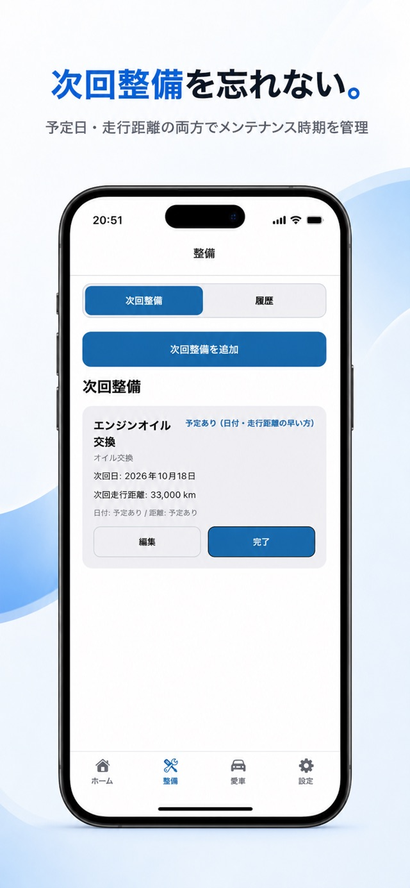

整備履歴
実施日・走行距離・費用・店舗・メモを記録。過去の点検やオイル交換を見返せます。
VECORD — ヴィコード
VECORDは、愛車1台の整備履歴・次回メンテナンス予定・整備費用をまとめて管理できるiPhoneアプリです。
紙やスマホのメモに残した記録を、あとから探していませんか。
ログイン不要。普段の記録は端末内に保存されます。
iPhone向け・1台の車両を管理。App Storeで対応OSをご確認ください。

FEATURES
毎日入力しなくても大丈夫。整備をした日や、予定が決まったときに残せます。
実施日・走行距離・費用・店舗・メモを記録。過去の点検やオイル交換を見返せます。
予定日や走行距離を登録。予定日に基づくローカル通知を設定できます。
整備にかかった費用を確認。給油代や税金を含むすべての維持費を計算する機能ではありません。
1台の愛車の情報と写真を、端末内にまとめて保存できます。
ディーラー・整備工場・保険会社・ロードサービスの連絡先を整理。電話は確認してから進みます。
設定から作成・復元できます。写真の実ファイルはJSONに含まれません。保存先・共有先をご確認ください。
HOW TO
車両情報を登録します。使い方ガイドは設定から見返せます。
直近の整備日・走行距離・費用などを、手元の記録から入力します。
メーカーの案内や整備工場と決めた予定を登録して確認します。


通知は予定日がある次回整備が対象です。走行距離だけの予定はホーム画面で確認してください。通知の配信はOSや端末の設定に左右されます。
GUIDES
何を残すか迷ったら、記録の基本から。
交換日・走行距離・費用を残す方法と、紙・メモ・アプリの使い分け。
点検・修理・費用を、次に見返しやすい形に整理します。
INFORMATION
データの保存方法、バックアップ、通知、利用ライブラリについて確認できます。
端末内に保存するデータ、JSONバックアップ、通知、第三者送信の有無を説明します。
ポリシーを読む →バックアップと復元、通知が届かない場合の確認方法、よくある質問を案内します。
サポートを見る →VECORD v1.0.0が直接利用するオープンソースソフトウェアを掲載します。
ライセンスを見る →